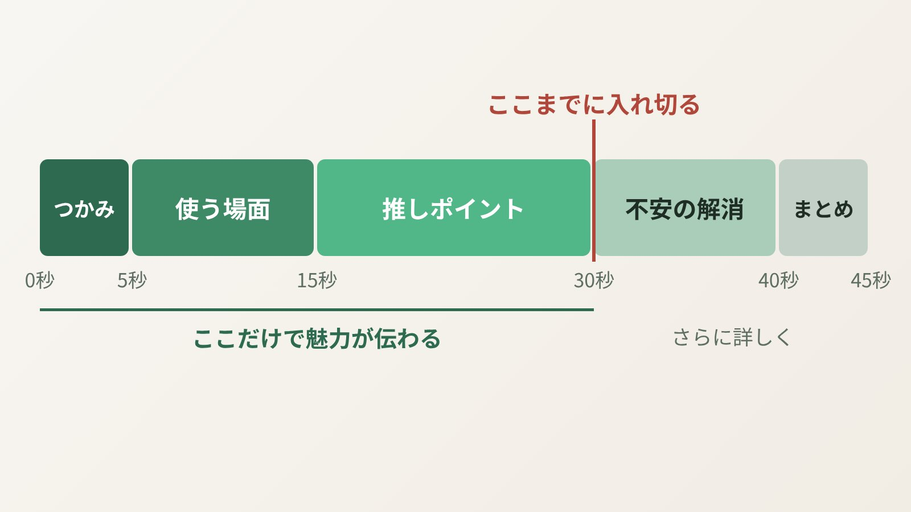

商品動画の出来をいちばん左右するのは、実は撮影や編集のテクニックより「構成」です。何を、何秒で、どの順番で見せるか。ここが決まっていれば、スマホで撮った素材でも伝わる動画になりますし、逆にここがあいまいだと、どんなにきれいな映像でも印象に残りません。この記事では、私がふだん商品動画の構成を作るときの考え方を、45秒の構成例つきでご紹介します。
なぜ「45秒」なのか
Amazonの商品ページ用の動画には、公式に明確な秒数の上限はありません。それでも私が45秒で作ることが多いのは、広告用（スポンサーブランド動画など）の上限が45秒なので、この長さに収めておけば、商品ページにも広告にも同じ動画を使い回せるからです。詳しくは規格・仕様の記事でまとめています。
ただし、45秒あるからといって、全部を最後まで見てもらえるとは限りません。だからこそ、大事なことは前半に寄せて、30秒までに入れ切る。これが構成づくりの大前提です。
構成を作る前に決める、たった1つのこと
いきなりカットを並べ始める前に、まず決めたいのが「この動画を見た人に、何を感じてほしいか」です。
ゴールがひとつに決まると、「このカットは必要か」「この説明は後回しでいいか」の判断がすぐにできます。訴求ポイントは多くても2〜3個まで。それ以上は、商品画像や説明文に任せてしまって大丈夫です。
45秒の基本の流れ

私がよく使う、商品ページ用の基本の型です。商品によって入れ替えはありますが、迷ったらこの順番から考えると組み立てやすくなります。
| 時間 | パート | 見せること |
|---|---|---|
| 0〜5秒 | つかみ | 何の商品で、何がうれしいのかを一瞬で伝える |
| 5〜15秒 | 使う場面 | 暮らしの中で、どんなときに使うかを見せる |
| 15〜30秒 | 推しポイント | いちばん伝えたい特長を2〜3個、実演で見せる |
| 30〜40秒 | 不安の解消 | サイズ感、お手入れ、付属品など「買う前に気になること」 |
| 40〜45秒 | まとめ | 商品名と、いちばんの魅力をもう一度 |
ポイントは、0〜30秒だけ見ても、商品の魅力が伝わりきるようにしておくことです。30秒以降は「さらに詳しく知りたい人」へのおまけ、くらいに考えておくと、構成がぶれません。
それぞれのパートのコツ
つかみ（0〜5秒）：ロゴから始めない
冒頭にブランドロゴやイメージ映像を長く入れると、何の商品か分かる前に離脱されてしまいます。最初の数秒には、商品そのものか、使ったときのいちばん気持ちいい瞬間を持ってきます。Amazonの動画広告の分析でも、最初の5秒以内に商品を見せた動画のほうが成果が良かったというデータがあります（詳しくはこちら）。
使う場面（5〜15秒）：「自分ごと」にしてもらう
白背景で商品だけを映すより、キッチンやリビングなど実際に使う場所で見せたほうが、「自分の家でもこう使える」とイメージしてもらいやすくなります。誰が、いつ、どこで使う商品なのかを、映像で伝えるパートです。
推しポイント（15〜30秒）：説明より実演
「吸水力が高い」とテキストで書くより、実際に水を吸わせて見せたほうがずっと伝わります。文字で言い切るより、映像で見せる。これは、Amazonの審査で表現が引っかかりにくくなるという意味でも安全な作り方です。
不安の解消（30〜40秒）：レビューの不満に先回りする
手に持ったときの大きさ、洗いやすさ、付属品の中身など、「買ってから思っていたのと違った」と言われがちなポイントを見せます。ここを丁寧に作ると、購入後のギャップによる低評価を減らすことにもつながります。
まとめ（40〜45秒）：最後は商品で終わる
商品名と、いちばんの推しポイントを短いテキストでもう一度。パッケージと商品を並べたカットで終わると、「どの商品だったか」が記憶に残りやすくなります。
構成例：キッチンツールの場合
たとえば「片手で使える、ワンタッチ式の調味料ミル」の動画なら、こんな構成になります（説明用の架空の例です）。
| 時間 | 映像 | テキスト |
|---|---|---|
| 0〜4秒 | フライパンを持ったまま、もう片方の手でミルを押して挽く | 片手で、ひと押し。 |
| 4〜14秒 | 朝の調理シーン。卵料理やサラダに手早く仕上げの一振り | 料理の手を止めずに |
| 14〜22秒 | 押すたびに挽ける様子をアップで。挽き目の調整も見せる | 挽き目は好みに合わせて調整 |
| 22〜30秒 | 中身の補充をワンステップで見せる | 補充もかんたん |
| 30〜40秒 | 手に持ったサイズ感、収納棚に置いたカット | 手になじむコンパクトサイズ |
| 40〜45秒 | パッケージと商品を並べたカット | 商品名／片手で、ひと押し。 |
テキストはどれも短く、ひと目で読める長さにしています。音なしで見られることも多いので、テキストだけ追っても内容が分かるように作るのがコツです。
構成案は「文字」で用意すれば十分
構成というと、絵コンテが必要なのでは？と思われるかもしれませんが、上の表のように「時間・映像・テキスト」を文字で書き出すだけでも十分に役立ちます。外注する場合も、これがあると制作者とのイメージのずれがぐっと減ります。
nanase worksでも、構成のご提案は文字で映像の流れや内容をまとめた形でお出ししています。ご依頼いただく側で用意しなければならないものではないので、「伝えたいこと」だけ教えていただければ、そこから構成をお作りします。
よくある質問
45秒より短い動画のほうがいいですか？
商品ページ用なら、伝えたいことが多い商品は45秒、シンプルな商品なら30秒ほどでも十分です。大切なのは長さより、要点を前半30秒までに入れ切ることです。広告用は15〜30秒ほどに短くまとめるのが基本です。
ナレーションは入れたほうがいいですか？
ナレーションがあると伝わりやすくなる一方、商品ページの動画は音なしで見られることも多いです。入れる場合も、テキストだけで内容が分かるように作っておくのがおすすめです。
構成は自分で考えないといけませんか？
いいえ。nanase worksでは、ヒアリングをもとに構成をご提案しています（StandardプランとPremiumプランは構成提案込みです）。伝えたいことや参考動画があれば教えてください。
伝えたいことが多くて、2〜3個に絞れません。
レビューを見て、お客様がいちばん気にしている点から選ぶのがおすすめです。絞りきれない分は、商品画像や説明文で補う役割分担にすると、動画もページ全体もすっきりします。
最後に、構成づくりで大事にしていること
構成を考えるとき、私はいつも「この商品を、まだ知らない人の目線」に立つようにしています。作っている側は商品をよく知っているぶん、つい「全部伝えたい」と思ってしまうのですが、見る人が知りたいのは、もっとシンプルなことのはずだからです。
何をいちばん伝えたいかを一緒に決めて、それがちゃんと届く順番に並べる。それが、私が考える「売れる構成」の正体です。
「何を何秒で見せるか」から、一緒に考えます
nanase worksでは、ヒアリングをもとに構成をご提案し、撮影・編集まで一貫して商品動画を制作しています。伝えたいことが整理できていなくても大丈夫です。